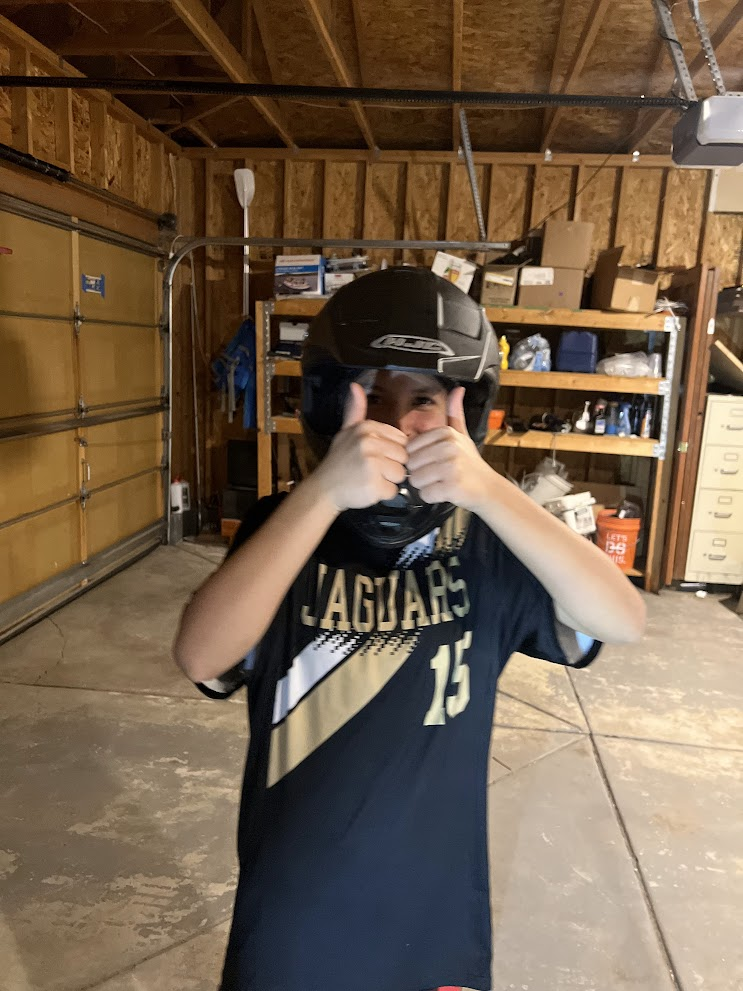

Komal^^
The story:
This app was inspired by my little sister, a new driver eager to improve her skills. One day, I noticed a moving truck with a sign that read, "How's my driving?" — and it sparked an idea. What if everyday drivers could get real feedback too? That's how this project began: a simple way for drivers to learn, grow, and become safer behind the wheel.